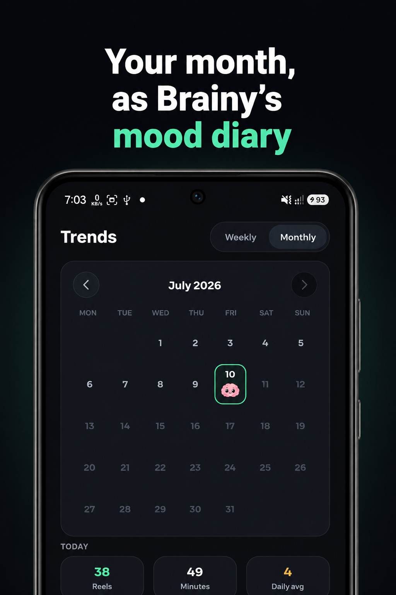

Dopamine Detox From Short-Form Video: A Realistic 7-Day Plan
Quick answer: A dopamine detox from Reels, Shorts and TikTok doesn't require a cabin in the woods. It requires three things for seven days: measure your baseline scrolling, block the five short-video feeds on your phone, and pre-plan what fills the gaps. The free Android app ShieldBrain does the first two with one toggle per platform.
What is a dopamine detox (really)?
The term is imprecise but the idea is sound. Your brain calibrates "rewarding" against the most stimulating thing it gets regularly. Short-form video — a new surprise every 30 seconds, zero effort — sets that bar absurdly high. After months of it, books feel slow, conversations feel flat, and work feels impossible. Not because they changed, but because your baseline did.
A dopamine detox is simply a sustained break from the highest-stimulation, lowest-effort input so the baseline resets. You don't lower your dopamine (you can't and wouldn't want to); you re-teach your brain that ordinary life is rewarding.
Why short-form video is target #1
You don't need to quit music, games, or even social media wholesale. One category does most of the damage: the algorithmic short-video feed — Instagram Reels, YouTube Shorts, TikTok, Facebook Reels and Snapchat Spotlight. It's the fastest reward loop on your phone and the one engineered hardest against your self-control. Cut it alone and you get 80% of the benefit with 20% of the sacrifice.
The 7-day plan
Day 0 (prep): measure your baseline
Install ShieldBrain and enable its Accessibility Service. Let the reels counter run for a day or two first — knowing your starting number (say, 300 reels/day ≈ 5 hours) makes the week meaningful and the after-photo dramatic. See how many reels do you actually watch?
Day 1: block all five feeds
In ShieldBrain, toggle blocking ON for Instagram Reels, YouTube Shorts, TikTok, Facebook Reels and Snapchat Spotlight. All five at once — leaving one open just relocates the habit. Your apps keep working; only the infinite feeds are gone.
Days 1–3: survive the itch
Expect restlessness, phantom phone-reaching and a strange amount of free time. This is the recalibration actually happening. Rules of thumb:
- Don't fill gaps with a new feed (news apps and infinite timelines count).
- Keep a boring default ready: a book, a podcast queue, a walk.
- Let yourself be bored sometimes — boredom is the muscle-soreness of attention recovery.
Days 4–7: reinvest the hours
By mid-week most people notice easier mornings, faster sleep onset and longer focus stretches. You'll have reclaimed 1–3 hours a day; give them a destination — study block, gym, project, actual socialising — or the void will look for a new filler.
Day 7: check your Brain Report Card
ShieldBrain grades your week and shows total scrolled, time spent, cleanest and heaviest day. Share the grade with a friend; then decide — most people extend the block indefinitely because nothing valuable turned out to be missing.

Tips that raise your odds
- Tell one person. Accountability roughly doubles completion rates.
- Move the tempting apps off your home screen — friction stacks with blocking.
- Don't aim for a "perfect" phone-free week. Perfect plans die on day 2. This plan only removes short-video feeds; everything else is allowed.
- If you slip (pause the block, binge a feed), just re-enable and continue. The week's average matters, not one evening.
Common mistakes
- All-or-nothing detoxing — quitting phone, sugar, music and games simultaneously. It collapses within days. Target the feeds.
- Relying on willpower instead of blocks. Structural change survives tired evenings; promises don't.
- Not measuring. Without a baseline and a falling counter, the win is invisible — and invisible wins don't stick. This is the core of stopping doomscrolling for good.
FAQ
What is a dopamine detox?
A deliberate break from high-stimulation, low-effort rewards — chiefly short-form video — so ordinary activities feel rewarding again. It recalibrates your baseline rather than literally lowering dopamine.
How long should it last?
Seven days is a realistic first target; many people extend to 30 days once they feel the first week's results.
Do I have to quit my phone completely?
No. Blocking only the short-video feeds gives most of the benefit while your phone stays useful. That's exactly what ShieldBrain does.
Start your 7-day reset
ShieldBrain blocks all five short-video feeds and shows your recovery week by week — free, private, Android.
Get ShieldBrain on Google PlayRelated guides: Stop doomscrolling · How many reels do you watch? · Reduce screen time on Android